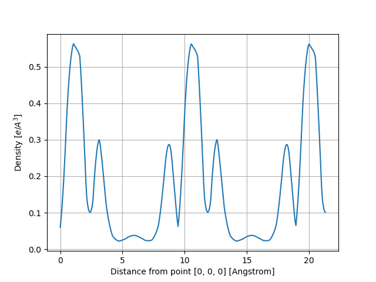

Note
Click here to download the full example code
Density¶
This example shows how to analyze the electronic density stored in the DEN.nc file.
- 
Out:
Full Formula (Si2)
Reduced Formula: Si
abc : 3.866975 3.866975 3.866975
angles: 60.000000 60.000000 60.000000
Sites (2)
# SP a b c
--- ---- ---- ---- ----
0 Si 0 0 0
1 Si 0.25 0.25 0.25
Abinit Spacegroup: spgid: 227, num_spatial_symmetries: 48, has_timerev: True, symmorphic: True
Density: nspinor: 1, nsppol: 1, nspden: 1
Mesh3D: nx=18, ny=18, nz=18
/Users/gmatteo/git_repos/abipy/abipy/core/fields.py:413: FutureWarning: get_neighbors_old is deprecated; use get_neighbors in pymatgen.core.structure instead.
This is retained purely for checking purposes.
nn_list = self.structure.get_neighbors_old(site, radius, include_index=True)
<Figure size 640x480 with 4 Axes>
from abipy.abilab import abiopen
import abipy.data as abidata
# Open the DEN.nc file
ncfile = abiopen(abidata.ref_file("si_DEN.nc"))
# The DEN file has a `Density`, a `Structure` and an `ElectronBands` object
print(ncfile.structure)
# To plot the KS eigenvalues.
#ncfile.ebands.plot()
density = ncfile.density
print(density)
# To visualize the total charge wih vesta
#visu = density.visualize("vesta"); visu()
# To plot the density along the line connecting
# the first and the second in the structure:
density.plot_line(point1=0, point2=1)
# alternatively, one can define the line in terms of two points
# in fractional coordinates:
density.plot_line(point1=[0, 0, 0], point2=[2.25, 2.25, 2.25], num=300)
# To plot the density along the lines connect the firt atom in the structure
# and all the neighbors within a sphere of radius 3 Angstrom:
density.plot_line_neighbors(site_index=0, radius=3)
Total running time of the script: ( 0 minutes 0.566 seconds)